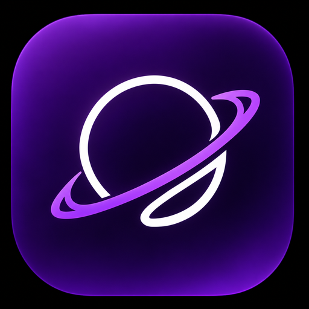

Сегодня21 ноября
›ТВОЯ ЛИЧНАЯ ВСЕЛЕННАЯ
Добро пожаловать,
Шимон.
Всё важное — в одном месте.
Твои пространства
Открывай и наполняйИДЕЯ ДНЯ
Большие перемены начинаются с маленьких шагов.

Всё важное — в одном месте.
Большие перемены начинаются с маленьких шагов.